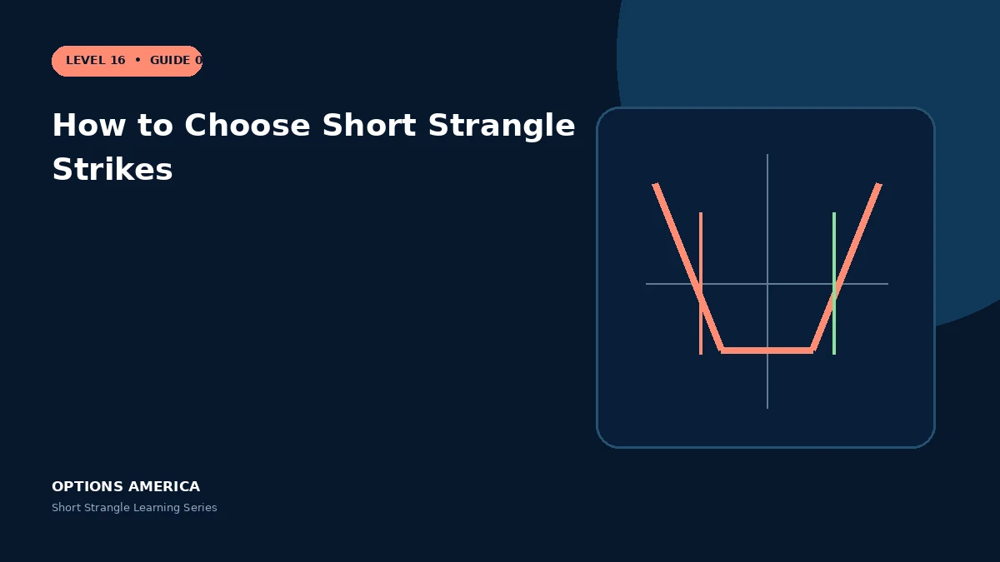

Choose call and put strikes using expected move, delta, skew, liquidity, credit and portfolio stress tests.
Expected move
Compare candidate strikes with the option market's implied move and independent price scenarios. A strike just outside one standard range can still be reached frequently.
Delta selection
Some traders use similar absolute deltas for call and put, but skew means equal delta does not mean equal distance or equal dollar risk. Delta also changes rapidly near a tested strike.
Skew and credit
OTM puts often carry higher IV than comparable calls. The extra put credit reflects demand for downside protection and should not be mistaken for free compensation.
Liquidity and portfolio
Choose strikes with executable markets, then stress each tail across all positions. Correlated put exposure can dominate a portfolio during a broad decline.
A practical example
At $100, a 15-delta put may be $8 below spot while a 15-delta call is $11 above. Equal starting delta still produces asymmetric price and volatility risk.
This simplified scenario focuses on selected outcomes; live prices and risks will differ. Live option prices also reflect the underlying price, time decay, rates, dividends, liquidity and transaction costs. Greeks are theoretical estimates, not guarantees.
Build a risk-first trading plan
Before using how to choose short strangle strikes, record the stock price, put and call strikes, expiration, total credit and contract multiplier. Calculate both breakevens, then estimate dollar loss beyond them under upside and downside gaps. A wide strike range improves the starting room but does not define either tail.
Stress several prices, time points and volatility levels, including a skew change that affects the put and call differently. Review delta, gamma, theta, vega and buying power for the complete portfolio. Multiple OTM positions can become tested together during a common market shock.
Define a profit target, maximum tolerated loss, tested-side trigger, margin reserve and latest exit date before entry. Decide whether an event is intentionally included and how assignment would be handled. Use multi-leg orders and confirm quantities after every fill, roll or partial close.
Document the result after exit, including slippage, assignment effects and the largest intraday exposure. Comparing the original forecast with the actual path helps distinguish a sound process from a lucky outcome and improves later strike, duration, margin-reserve and position-size choices under similar market conditions.
Frequently asked questions
Are equal-delta strikes required?
No.
Do wider strikes define risk?
No.
Why inspect skew?
Put and call IV can differ materially.
Continue the Short Strangle cluster
Explore related guides: Short Strangle vs Iron Condor · Short Strangle Greeks: Delta, Gamma, Theta and Vega · When to Close or Roll a Short Strangle. For a structured sequence, use the free Level 16 – Short Strangle course.
Options involve risk and are not suitable for every investor. This material is educational and is not investment, tax or legal advice. Greeks are theoretical estimates, and contract terms and broker requirements can vary.